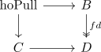
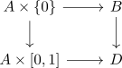

comparison map for the homotopy pullback as weak equivalence for a fibration
Proposition
Let

be a diagram, where $f$ is a serre fibration
Then the comparison map for the homotopy pullback and pullback is a weak homotopy equivalence
Proof
use: factorization for hurewicz fibration
